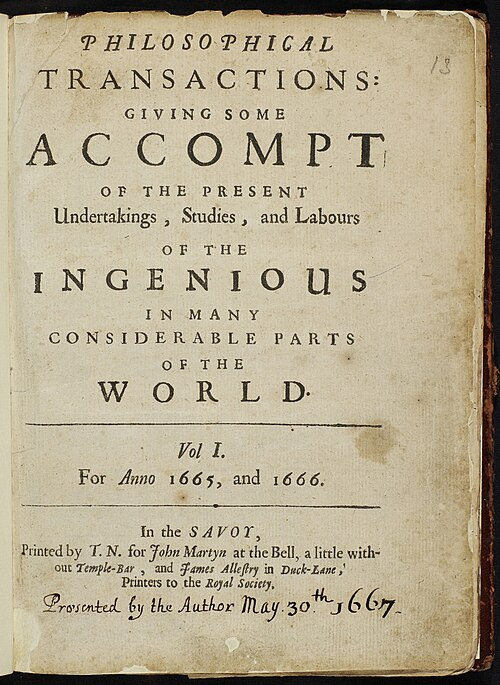
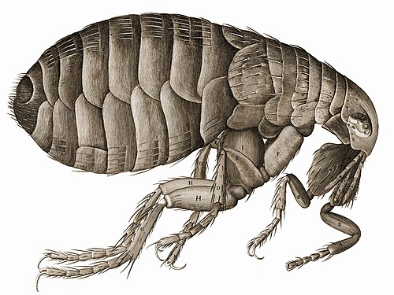
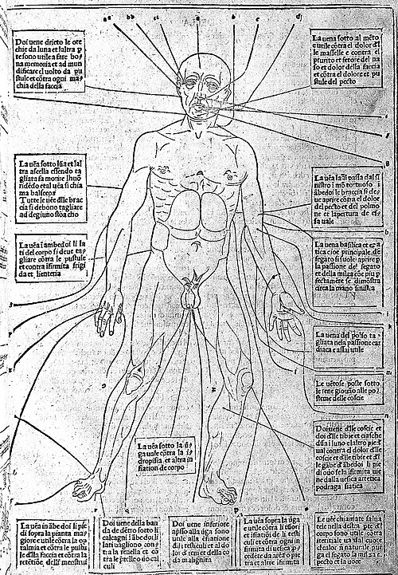
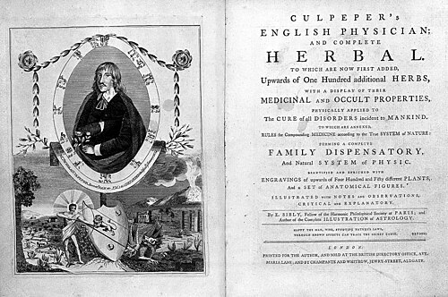
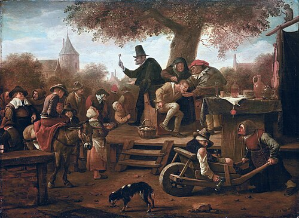
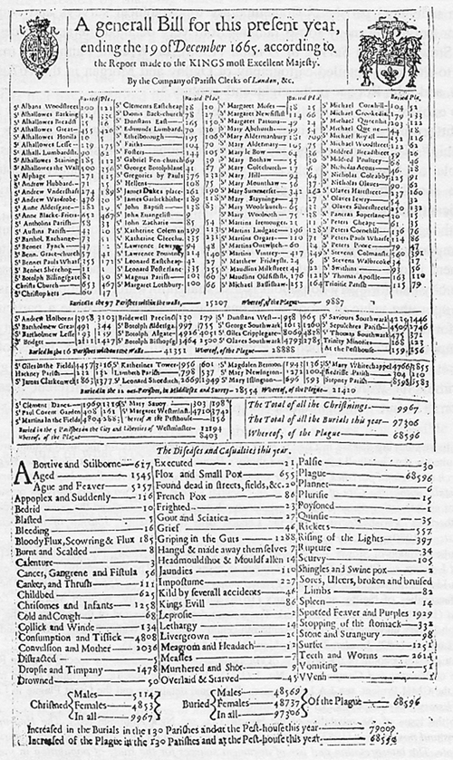
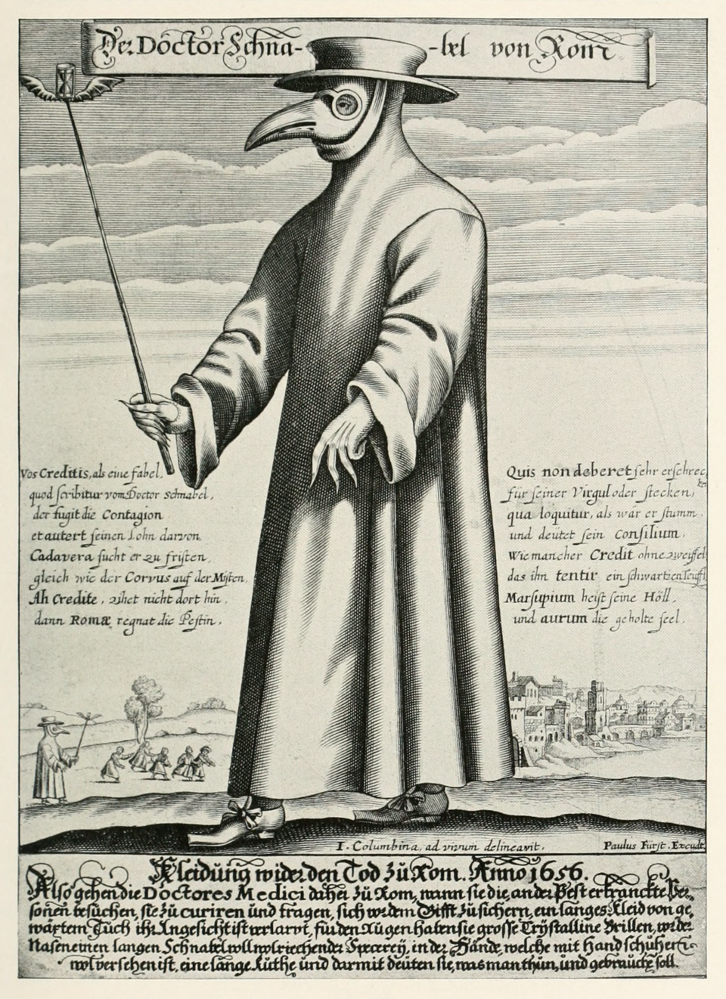

Renaissance
Paper 1: Medicine Through Time with the Western Front
Course Textbook
Enquiry: How has medicine changed from c1250 to the modern day?
Contents
|
Lesson 1: KT2.1: The New Spirit of Enquiry: Humanism, The Printing Press & The Royal Society (c1500–c1700)
|
|
|
Lesson 2: KT2.2: Did treatments improve during the Renaissance?
|
|
|
Lesson 3: KT2.3: How significant were William Harvey and the Great Plague?
|
|
L1: KT2.1: The New Spirit of Enquiry: Humanism, The Printing Press & The Royal Society (c1500–c1700)[[SRC_MARKER:L3_Start]]
Learning Objectives
Explain how the invention and spread of the printing press transformed the communication of medical ideas.
Assess how the founding of the Royal Society and its motto 'Nullius in Verba' fostered empirical scientific enquiry.
Evaluate why changes in communication did not immediately translate into better treatments or changing public beliefs about the causes of disease.
The Medical Renaissance was ignited by an intellectual rebellion against ancient dogma. Humanism encouraged scholars to believe their own eyes rather than blindly trusting 1,400-year-old manuscripts. When Gutenberg's printing press began churning out identical illustrated texts in the 1450s, and when the Royal Society received its royal charter in 1662 with the radical battle-cry 'Take nobody's word for it', the monopoly of the Catholic Church and Galen was permanently broken. Yet, behind this communication triumph lay a haunting historical paradox: revolutionary scientific networks did not discover a single new cure, leaving ordinary citizens clinging to the Four Humours and miasma for another two centuries.
Did you know?
- c.1440: Johannes Gutenberg invents the movable metal type printing press in Mainz, revolutionizing book production across Europe.
- 1662: King Charles II grants a Royal Charter to the Royal Society, establishing the motto Nullius in Verba ('Take nobody's word for it').
- 1665: Henry Oldenburg publishes Philosophical Transactions, the world's first peer-reviewed scientific journal.
Recall & Retrieval (Prior Knowledge: Medieval Medicine & The Black Death)
1. In what year did the Black Death arrive in England?
2. Who were the 'flagellants'?
3. State one common medieval preventative measure for the Black Death.
4. What are the four humours?
5. What was 'miasma'?
6. Which Roman physician developed the Theory of Opposites?
7. How did medieval hospitals differ from modern ones?
8. What was the purpose of 'bleeding' (phlebotomy) in medieval medicine?
9. What was the role of a medieval apothecary?
10. How did the medieval Church explain the cause of disease?
Vocabulary Check
The Odd One Out: Circle ONE term that does not belong with the others. Explain your reasoning: What historical connection links the other terms, and why is your chosen term different?
Humanism | Movable Type | The Royal Society | Nullius in Verba | Philosophical Transactions | Empiricism | Animalcules | Miasma
Teacher Model / Pupil Reasoning:
[[SRC_MARKER:L3_Source_0]]
Source S1: Renaissance Printing House with Movable Type (16th c.)

A Renaissance printing house showing compositors setting movable metal type and pressmen operating the heavy wooden screw press.
[[SRC_MARKER:L3_Source_1]]
Source S2: Title Page of Philosophical Transactions, Vol. I (1665–1666)

Frontispiece of Volume I of Philosophical Transactions (1665), the world's first peer-reviewed scientific journal, printed for John Martyn, printer to the Royal Society.
[[SRC_MARKER:L3_Source_2]]
Source S3: Robert Hooke's Engraving of a Flea from Micrographia (1665)

Robert Hooke's famous fold-out engraving of a flea observed under the compound microscope, published by the Royal Society in Micrographia (1665).
### [1.1] The Medieval Stagnation: Why Ancient Dogma Refused to Die
[1.1] For over a millennium, European medicine lived under the unquestioned authority of ancient Rome. Monks in Catholic monasteries painstakingly hand-copied the treatises of Galen and Hippocrates, treating their classical writings as infallible medical scripture. To challenge Galen was to risk excommunication or imprisonment. Medical students sat passively in university lecture halls while an elderly professor read aloud in Latin from an elevated pulpit (cathedra), while an uneducated barber-surgeon sliced an animal carcass on the floor below. No one dissected to discover anything new; dissection was merely a visual demonstration to prove that Galen was always right.
### [1.2] The Humanist Awakening: Believing Your Own Eyes Over Ancient Dust
[1.2] By 1500, this intellectual stagnation began to fracture under the force of the Renaissance—a cultural and intellectual rebirth driven by Humanism. Humanist scholars in Italy and northern Europe sought out original Greek and Roman manuscripts that had not been distorted by centuries of monastic transcription. More importantly, humanism championed human reason, secular inquiry, and the moral duty to directly interrogate the physical world rather than blindly accepting traditional dogma. Scholars began to argue that knowledge should be derived from what human eyes could observe and verify. Yet, in the squalid, smoke-choked streets of Tudor and Stuart London, ordinary citizens remained untouched by university philosophy. When epidemic fevers struck, they still looked to the heavens in terror, convinced that disease was God's punishment for sin or the result of poisonous atmospheric vapors (miasma).
Source A: Source A: Early Gutenberg-Style Movable Type Printing Press (16th c.)
### [2.1] Smashing the Scribes: Gutenberg’s Machine Defies Church Censorship
[2.1] The invention of the movable metal type printing press by
Johannes Gutenberg in Mainz, Germany (c.1440), brought to England by
William Caxton in 1476, transformed European communication. Prior to printing, every single medical manuscript had to be hand-copied by monastic scribes. This process took months per volume, cost vast sums of money, and routinely introduced compounding transcription errors and artistic distortions. Crucially, the Catholic Church controlled the scriptoria, enabling it to censor and suppress any text that challenged Galenic or theological orthodoxy. Gutenberg's press smashed this clerical bottleneck. Movable metal type allowed thousands of identical copies of a single text to be produced in days at a fraction of the cost, making censorship virtually impossible as books crossed borders faster than authorities could confiscate them. Furthermore, printers could reproduce complex, mathematically precise anatomical woodcuts identically, ensuring medical students in London, Paris, and Padua studied the exact same diagrams without error.
### [2.2] The Social Limits of Print: Latin Luxury vs Popular Superstition
[2.2] Yet, this communications revolution had profound social and economic limitations. The overwhelming majority of pioneering medical treatises were printed in
Latin, the international language of scholars, rendering them completely inaccessible to ordinary, uneducated people. Books remained expensive luxury items affordable only by wealthy physicians, nobles, and university libraries. For the ordinary peasant or apprentice in Tudor England, formal medical texts were irrelevant. Commercial printshops quickly realized that printing cheap astrological almanacs, folk herbals, and traditional Galenic health guides in English was far more lucrative than publishing dense scientific treatises. Consequently, rather than eradicating medieval superstitions, early commercial printing actually helped entrench traditional beliefs in humoral balance and planetary influences among the wider public.
[[SRC_MARKER:L3_Task_1_0]]Q1. GCSE Analytical Assessment: Evaluate both the revolutionary communication impact of the printing press and its historical limitations.
Source B: Source B: Title Page of Philosophical Transactions, Vol. I (1665–1666)
### [3.1] 'Take Nobody’s Word For It!': The Royal Charter of 1662
[3.1] By the mid-17th century, the humanist call for empirical enquiry had gained institutional power in Britain. In November 1660, a group of twelve natural philosophers met at Gresham College in London following a lecture by the young astronomer Christopher Wren. In 1662, King Charles II granted them an official royal charter, establishing
The Royal Society of London for Improving Natural Knowledge. The Society adopted the radical Latin motto
Nullius in Verba ("Take nobody's word for it"). They banned theological debate and declared that no scientific claim could be accepted as truth without physical experiment, mathematical calculation, or observable demonstration. The Royal Charter gave experimental science the official blessing and prestige of the English Crown, transforming natural philosophy from a suspicious, heretical pursuit into a prestigious national endeavor.
### [3.2] Philosophical Transactions (1665): The World's First Peer-Reviewed Journal
[3.2] In 1665, the Royal Society's first secretary, Henry Oldenburg, created Europe's first peer-reviewed scientific journal:
Philosophical Transactions (
Source B). For the first time in medical history, scientists had an established international network for sharing verified laboratory experiments, case notes, and observations. Instead of individual scholars keeping discoveries secret or relying on private letters, physicians across Europe could read, critique, and replicate each other's experiments. Oldenburg established the practice of peer review, ensuring that submitted papers were examined and verified by other members before publication, permanently raising the standards of scientific evidence.
### [3.3] The Optical Marvels: Robert Hooke & Antonie van Leeuwenhoek
[3.3] The power of the new scientific method was demonstrated through optical technology. In 1665, Royal Society curator
Robert Hooke published
Micrographia, a breathtaking folio volume featuring intricate, copperplate engravings of everyday objects seen through the compound microscope. His giant, fold-out illustration of a common flea (
Source C) stunned the public, revealing complex joints, bristles, and claws never before seen by human eyes. A decade later, an uneducated Dutch draper named
Antonie van Leeuwenhoek used simple, high-power single-lens microscopes to observe scrapings from his own teeth, discovering millions of microscopic organisms swimming in water—creatures he named
'animalcules' (bacteria and protozoa). When Leeuwenhoek submitted his observations to the Royal Society in 1676 and 1683, the Society verified his findings, confirming that a previously invisible living universe existed.
[[SRC_MARKER:L3_Task_2_0]]Q2. GCSE Analytical Assessment: Evaluate both the institutional breakthrough of the Royal Society and its practical medical limitations.
Source C: Source C: Robert Hooke's Fold-Out Engraving of a Flea from Micrographia (1665)
### [4.1] Brilliant Minds, Helpless Patients: The Great Renaissance Paradox
[4.1] Despite the breathtaking achievements of Gutenberg's press, the Royal Society, and microscope technology, the Renaissance revealed a tragic historical paradox: revolutionary scientific communication did not cure disease. While Hooke and Leeuwenhoek revealed microscopic structures and 'animalcules', no 17th-century scientist understood what these tiny organisms were or what they did. Because the chemical and biological mechanisms of infection were completely unknown, 'animalcules' were treated merely as fascinating optical curiosities and parlor tricks rather than deadly pathogens. The true cause of infectious illness—microscopic germs—remained entirely undiscovered for another two centuries until Louis Pasteur published his Germ Theory in 1861.
### [4.2] Everyday Continuity at the Bedside: Leeches, Miasma and Astrological Almanacs
[4.2] Consequently, for the vast majority of sick patients in Britain between 1500 and 1700, medical treatment experienced almost complete continuity with the Middle Ages. Knowing that microscopes could magnify a flea (Source C) or that the Royal Society debated air pressure did not save a single child dying of smallpox or cholera. When fevers struck, licensed university physicians still reached for their lancets to perform phlebotomy (bleeding) or prescribed violent purges to balance the Four Humours. Ordinary families continued to rely on village wise women, local apothecaries, and herbal remedies. The scientific revolution had permanently transformed how medical ideas were investigated, verified, and communicated among the educated elite; but inside the sickroom, ancient Galenic and humoral practices held sway.
Pair & Share Activity
Q3. undefined
L2: KT2.2: Did treatments improve during the Renaissance?[[SRC_MARKER:L4_Start]]
Learning Objectives
Analyze the continuities and changes in Renaissance treatments and preventions, including the impact of exploration and alchemy.
Explain how institutional changes, specifically the Dissolution of the Monasteries, altered hospital care in England.
The Medical Renaissance saw an explosion of scientific curiosity, yet this rarely translated into better everyday medical care. While pioneer anatomists fundamentally transformed medical training by proving ancient authorities wrong, the average patient still relied on traditional herbal remedies, bleeding, and local wise women. The unexpected closure of monastery hospitals forced a massive rethink in healthcare, slowly paving the way for specialised hospitals focused on actually curing the sick.
Did you know?
- 1536: The year King Henry VIII initiated the Dissolution of the Monasteries, forcing the vast majority of English hospitals to close.
- 1543: The exact year Andreas Vesalius published his revolutionary, highly accurate anatomy textbook, On the Fabric of the Human Body.
- 300: The approximate number of anatomical mistakes Vesalius proved Galen had made because the Roman physician had dissected animals instead of humans.
Recall & Retrieval
1. What was the Renaissance?
2. What invention helped spread new medical ideas during the Renaissance?
3. Who was Thomas Sydenham?
4. Who wrote 'On the Fabric of the Human Body' (1543)?
5. What did Vesalius prove about Galen's anatomical ideas?
6. In what year did the Black Death arrive in England?
7. Explain the role of the apothecary in medieval medicine.
8. Why did the influence of the Church begin to decline in the Renaissance?
9. What was the Royal Society?
10. What was 'miasma'?
Vocabulary Check
The Golden Sentence: Choose TWO terms from the word bank. Write ONE grammatically sophisticated, historically accurate sentence connecting them using a causal conjunction (because, although, or consequently):
Transference | Iatrochemistry | Thomas Sydenham | Pharmacopoeia | Dissolution of the Monasteries | Pest House
Teacher Model / Pupil Sentence:
[[SRC_MARKER:L4_Source_0]]
Source S1: 16th-Century Phlebotomy and Humoural Bloodletting Woodcut

Woodcut diagram from a 16th-century Italian medical text detailing specific vein points on the human body to be lanced for humoural bloodletting.
[[SRC_MARKER:L4_Source_1]]
Source S2: Nicholas Culpeper's English Physitian & Complete Herbal (1652)

Title page of Nicholas Culpeper's The English Physitian, the first major medical guide to publish herbal remedies and medical knowledge in plain English.
[[SRC_MARKER:L4_Source_2]]
Source S3: Jan Steen: The Quack Doctor Selling Elixirs (c.1650)

Jan Steen satirical painting De Kwakzalver (The Quack Doctor), depicting an itinerant charlatan peddling miracle elixirs and teeth extractions on an outdoor stage.
Treatments in the Renaissance
Despite the brilliant discoveries in anatomy during the Renaissance, treatments for ordinary people hardly changed at all. Doctors still could not cure infectious diseases, so they continued to rely on traditional methods like bloodletting, purging, and herbal remedies.
The only real changes in treatment came from the discovery of the 'New World' (the Americas). Explorers brought back new herbs and plants, such as the bark of the Cinchona tree, which was used to treat malaria, and sarsaparilla, which was used to treat syphilis. Furthermore, Thomas Sydenham, known as the 'English Hippocrates', began encouraging doctors to observe their patients' symptoms closely and treat the specific disease, rather than just treating the symptoms individually.
Source A: Source A: 16th-Century Phlebotomy and Humoural Bloodletting Woodcut
Continuity and Change in Treatment
Bleeding, purging, and sweating remained the most common everyday treatments because the general public and physicians still firmly believed that an imbalance of the Four Humours caused disease.
A newly popular theory was transference-the belief that an illness could be transferred to an object or animal (for example, rubbing warts with an onion, or sleeping next to a sheep to cure a fever).
Global exploration brought new exotic herbal remedies from the New World (the Americas), such as the use of cinchona bark, which contains quinine, to successfully treat malaria.
The growth of alchemy led to iatrochemistry (medical chemistry), popularized by the physician Paracelsus. This introduced powerful mineral-based cures, such as antimony and mercury, to forcefully purge the body of disease, which challenged traditional plant-based herbalism. Although exotic new herbs and powerful chemicals were introduced, treatment experienced massive continuity overall because doctors were still fundamentally trying to fix the body's internal balance rather than fighting germs.
[[SRC_MARKER:L4_Task_1_0]]Q1. GCSE Analytical Assessment: Evaluate the extent to which medical treatments improved during the Renaissance (c1500–c1700).
Source B: Source B: Nicholas Culpeper's English Physitian & Complete Herbal (1652)
Continuity and Change in Prevention
People still desperately tried to avoid breathing in miasma (bad air) by carrying sweet-smelling herbs, and town councils continued to enforce the removal of rotting sewage from streets.
People still followed the Regimen Sanitatis (moderation in diet and exercise), but also began using new instruments like barometers to try and link specific weather conditions to outbreaks of disease.
Crucially, bathing became far less fashionable. The terrifying spread of syphilis (the Great Pox) across Europe had been linked to public bathhouses, so people instead tried to keep clean by regularly changing their linen clothes. Despite changing attitudes towards public bathing and a more scientific approach to observing the weather, prevention methods remained largely ineffective because the true microscopic causes of disease remained invisible.
Knowledge Check (Q2)
Why was the importation of cinchona bark from South America a more successful treatment than traditional humoural methods?
- A. It contained quinine, which actually treated the specific symptoms of malaria, rather than just attempting to rebalance humours.
- B. It was a holy relic blessed by the Pope.
- C. It killed the germs that caused malaria.
- D. It was used to draw bad humours out of the skin.
[[SRC_MARKER:L4_Task_2_0]]Q3. Describe the approach of Thomas Sydenham.
Source C: Source C: Jan Steen: The Quack Doctor Selling Elixirs (c.1650)
Medical Care: Hospitals and the Community
In 1536, King Henry VIII ordered the Dissolution of the Monasteries. Because the vast majority of hospitals were run by monks and nuns on church land, the hospital system was devastated, shutting down almost all hospital beds in England.
A few hospitals, such as St Bartholomew's, only survived because the citizens of London petitioned the King directly to refound it as a municipal hospital. Slowly, new charity-funded hospitals opened that actually employed physicians to focus on curing the sick, rather than just caring for their souls.
Pest houses (or plague houses) began to appear; these were specialized isolation hospitals created specifically to quarantine patients suffering from highly contagious diseases.
Apothecaries and surgeons also became more organised and professional during this period. In 1540, the Company of Barber-Surgeons was formed when Henry VIII merged the barbers' and surgeons' guilds, giving surgery its own formal training structure and separating it from simple haircutting for the first time. In 1617, apothecaries broke away from the Grocers' Company to form their own Society of Apothecaries, which trained and licensed its members to legally prepare and sell medicines, helping to squeeze out untrained 'quack' healers.
Despite these changes, the vast majority of sick people continued to be cared for at home by female family members mixing cheap herbal remedies. The closure of the monasteries temporarily devastated the hospital system, but ultimately triggered a vital shift towards hospitals becoming places of practical medical treatment rather than religious rest homes.
[[SRC_MARKER:L4_Task_3_0]]Q4. Explain why treatments for ordinary people hardly changed during the Renaissance.
[[SRC_MARKER:L4_Task_3_1]]Q5. Describe one way apothecaries or surgeons became more professional during the Renaissance.
Medical Training and the Work of Vesalius
Physicians still trained at universities, but dissection was finally legalised and became a central, highly fashionable part of their education. Students learned using highly detailed printed fugitive sheets (anatomical drawings with liftable paper layers).
The most famous anatomist of the period was Andreas Vesalius, a lecturer in surgery at the University of Padua.
In 1543, Vesalius published his groundbreaking, heavily illustrated anatomy book: On the Fabric of the Human Body.
By performing dissections on executed criminals, Vesalius proved that Galen had made over 300 mistakes. For example, he proved the human jawbone is one solid bone, not two; that the breastbone has three segments, not seven; and that blood does not flow through invisible pores in the heart's septum. Vesalius revolutionized medical training because he proved that the ancient texts were flawed, actively encouraging generations of doctors to perform their own dissections and believe their own eyes rather than blindly trusting tradition.
[[SRC_MARKER:L4_Task_4_0]]Q6. To what extent did the 'New World' improve medical treatments?
Pair & Share Activity
Q7. In the period c1500-c1700, did the introduction of global herbal remedies and chemical cures represent a more significant improvement in treatment than the gradual reforms made to the training of physicians?
GCSE Exam Practice
Q8. Explain why there was little change in medical treatments during the Renaissance period (c1500-c1700), despite new anatomical discoveries. (12 marks)
Q9. Explain one way in which medical treatments in the Renaissance period (c1500-c1700) were similar to medical treatments in the medieval period (c1250-c1500). (4 marks)
L3: KT2.3: How significant were William Harvey and the Great Plague?[[SRC_MARKER:L5_Start]]
Learning Objectives
Explain the significance of William Harvey's discovery and the reasons for its limited short-term impact.
Compare the government and public responses to the 1665 Great Plague with the 1348 Black Death.
By the 17th century, medical knowledge was advancing, but practical treatment lagged far behind. William Harvey's brilliant discovery of blood circulation proved ancient theories wrong and laid the foundations for modern physiology, though it saved no lives at the time. Meanwhile, the devastating Great Plague of 1665 demonstrated that without an understanding of germs, even organized government action was powerless to stop a catastrophic epidemic.
Did you know?
- 1628: The year William Harvey published his groundbreaking book proving the circulation of the blood.
- 100,000: The approximate number of Londoners who died during the Great Plague of 1665 (one-fifth of the city's population).
- 28: The number of days an infected family was locked inside their house under the strict new quarantine rules.
Recall & Retrieval
1. Who wrote 'On the Fabric of the Human Body' (1543)?
2. What did Vesalius prove about Galen's anatomical ideas?
3. What was 'transference'?
4. What was the Royal Society?
5. Why did the influence of the Church begin to decline in the Renaissance?
6. In what year did the Great Plague hit London?
7. How did local mayors try to prevent the spread of the Black Death in 1348?
8. What was the Theory of the Four Humours?
9. What was the purpose of 'bleeding' (phlebotomy) in medieval medicine?
10. What was the role of a medieval apothecary?
Vocabulary Check
Conceptual Classification: Categorise the terms from the word bank into the two historical boxes below:
Circulation | William Harvey | Great Plague | Bills of Mortality | Searchers | Plague Doctor
Power, Governance & Warfare
Economy, Trade & Society
[[SRC_MARKER:L5_Source_0]]
Source S1: William Harvey's Arm Experiment with Valves in Veins (1628)

Engravings from Harvey's De Motu Cordis demonstrating how one-way valves in the arm veins permit blood to flow only toward the heart.
[[SRC_MARKER:L5_Source_1]]
Source S2: The London Bill of Mortality for the Great Plague (1665)

General Bill of Mortality for the City of London recording 7,165 plague deaths in a single week at the height of the epidemic in September 1665.
[[SRC_MARKER:L5_Source_2]]
Source S3: Engraving of 'Doktor Schnabel von Rom' (The Plague Doctor, 1656)

The iconic plague doctor costume: heavy waxed leather coat, spectacles, a long bird-like beak filled with aromatics, and a wooden cane to examine corpses.
William Harvey and the Great Plague
In 1628, William Harvey made one of the most important discoveries in medical history: he proved that blood circulates around the body, pumped by the heart. He completely destroyed Galen's theory that blood was constantly being made in the liver and burned up by the muscles. Harvey proved this by dissecting cold-blooded animals and experimenting on human veins.
However, in 1665, the Great Plague struck London, proving that while anatomical knowledge had improved, prevention of disease had not. People still blamed miasma and the planets, though local governments did take stronger action this time. The Mayor of London ordered victims to be locked in their houses with a red cross painted on the door, and banned public gatherings. Yet, just like in 1348, the true cause (fleas on rats) remained unknown.
William Harvey — Royal Physician
An English physician who discovered the full circulation of blood in the human body. By dissecting cold-blooded animals and experimenting with ligatures, he proved the heart acts as a pump, disproving Galen's theory that blood was constantly manufactured in the liver.
Key actions: Dissected cold-blooded animals to observe slow heartbeats, and used a system of rods and ligatures on human arms to prove that blood flows only one way through veins.
Significance: Published De Motu Cordis (1628). Proved that the heart acts as a muscular pump circulating blood around the body, disproving Galen's theory that blood was constantly manufactured by the liver and absorbed by the tissues.
Limitations: His discovery had no direct clinical treatment value at the time, as knowing blood circulated could not cure disease. He lacked microscopes powerful enough to prove the existence of capillaries (which connect arteries and veins; discovered by Malpighi in 1661). Many contemporary doctors rejected his findings, and his ideas did not appear in English university textbooks until decades later.
[[SRC_MARKER:L5_Task_1_0]]Q1. GCSE Analytical Assessment: Evaluate both the revolutionary physiology of William Harvey and its total lack of practical treatment impact.
Source A: Source A: William Harvey's Arm Experiment with Valves in Veins (1628)
William Harvey and the Circulation of the Blood
William Harvey was an English doctor who studied at the famous medical university in Padua, Italy, before eventually becoming the personal royal physician to King Charles I.
In 1628, he published his groundbreaking book, An Anatomical Account of the Motion of the Heart and Blood in Animals.
By using mechanical pump calculations and dissecting cold-blooded animals (whose slower heartbeats allowed him to observe muscle movement), he proved that blood circulates around the body in a one-way system, and that the heart acts as a muscular pump.
He proved that the ancient Roman physician Galen was wrong when he claimed that blood was constantly manufactured in the liver and absorbed as fuel by the body. Harvey's work was a massive scientific breakthrough because it proved that traditional ancient texts were flawed and laid the vital foundations for modern physiology and future developments in surgery and blood transfusions.
[[SRC_MARKER:L5_Task_2_0]]Q2. Identify what William Harvey proved about the blood.
The Limits of Harvey's Discovery
Despite his brilliance, Harvey's discovery had almost no immediate impact on everyday medical treatment because understanding how blood circulates did not help a doctor cure a fever or treat a disease in 1650.
Many traditional doctors initially rejected his ideas because they went against Galen, and some even openly criticised him. It took until 1673 for his theories to be widely taught in universities.
Furthermore, he could not explain how blood moved from arteries to veins because capillaries were invisible to the naked eye. This gap between brilliant new science and unchanged everyday treatment is a useful revision idea to remember (some teachers nickname it the 'Stagnation Paradox' as a memory aid, though it is not a term you need to quote in an exam): Vesalius and Harvey both had almost zero immediate impact on bedside treatment. Knowing that blood circulated did not give physicians new drugs, meaning patients still demanded traditional humoural bleeding and purging.
Knowledge Check (Q3)
What was the main reason why Harvey's discovery of blood circulation did not immediately change medical treatments?
- A. Because he refused to publish his findings in a book.
- B. Because the Church banned his book and executed him.
- C. Because knowing how the blood circulated did not provide doctors with any new drugs or cures for sick patients.
- D. Because he still believed the liver manufactured blood.
[[SRC_MARKER:L5_Task_3_0]]Q4. GCSE Analytical Assessment: Evaluate the advancements in government organization against the ongoing medical ignorance of the 1665 plague.
Source B: Source B: The London Bill of Mortality for the Great Plague (1665)
Causes and Treatment of the Great Plague (1665)
In 1665, the Great Plague struck London, eventually killing 100,000 people (one in five Londoners).
Since nobody knew about germs, people blamed the same causes as the Black Death of 1348: God's punishment for mankind's wickedness, an unusual alignment of the planets, and mostly miasma (bad air pouring out of the stinking city earth).
Treatments were still highly ineffective. Physicians advised patients to wrap up in thick woollen cloths by a fire to sweat the disease out.
The theory of transference was also popular: people tried strapping a live chicken to the buboes to draw out the poison. Quack doctors also made fortunes selling fake herbal remedies like 'London treacle' or 'plague water'. The bizarre and ineffective treatments used during the Great Plague prove that, despite the scientific discoveries of the Renaissance, practical medicine had experienced almost total continuity since the Middle Ages.
[[SRC_MARKER:L5_Task_4_0]]Q5. Explain how the Great Plague of 1665 was dealt with differently from the Black Death.
Source C: Source C: Engraving of 'Doktor Schnabel von Rom' (The Plague Doctor, 1656)
Prevention and Government Action in 1665
The biggest change from the Black Death was the highly organized response from the local government and King Charles II. Public meetings, theatres, and large funerals were banned to stop the spread.
The mayor appointed searchers to identify infected houses. Victims were quarantined inside their homes for 28 days, and their doors were painted with a red cross and the words "Lord have mercy on us".
To clear the deadly miasma, large fires and barrels of tar were burned in the streets.
Tragically, the mayor also ordered the slaughter of 40,000 dogs and 200,000 cats, mistakenly believing they spread the disease. Although the government took a much more active and organized role in trying to prevent the plague, their efforts ultimately failed because their actions were based on incorrect theories about bad air rather than exterminating the true culprits: the rats and fleas.
[[SRC_MARKER:L5_Task_5_0]]Q6. Evaluate the short-term significance of Harvey's discovery.
Pair & Share Activity
Q7. Why was William Harvey's brilliant discovery of blood circulation completely ignored in the prevention and treatment of the Great Plague of 1665?
GCSE Exam Practice
Q8. Explain why the government's response to the Great Plague of 1665 was more effective than its response to the Black Death of 1348. (12 marks)
Q9. Explain one way in which the response to the Great Plague in London (1665) was different from the response to the Black Death (1348). (4 marks)
Generated: 2026-09-19 13:08:30 UTC | Unit: edexcel_medicine